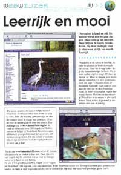

• Vara's Vroege Vogels (Radiouitzending 13 januari 2001)
Link van de week: Natuurfotografen en andere enthousiaste Belgische natuurliefhebbers hebben een prachtige internetsite samengesteld met daarop een overzicht van 326 vogels en 106 zoogdieren die in West- en Midden-Europa voorkomen. De site heet natuurbeleving.be. De vogel- en zoogdiersoorten zijn voorzien van geluid, beschrijving en schitterend beeldmateriaal.
• Klap (nummer 3, november 2001)

"De natuur is mooi. Bestaat er lelijke natuur? Misschien. Er bestaan zeker wel mooie en lelijke sites. Sites die prachtig gemaakt zijn, en sites die zomaar gauw in elkaar gestoken zijn. Of ze nu over de natuur gaan of over iets anders. Een prachtige site is www.natuurbeleving.be. Je vindt er informatie over 300 vogels en 21 vleermuizen in België en Nederland. De namen staan alfabetisch gerangschikt maar je kan ze ook zelf intikken en opzoeken. De site is heel overzichtelijk, er zijn mooie foto's en de vogeltkes fluiten de oren van je kop!"• EOS Magazine (februari 1999, p. 114)
"De Oost-Vlaamse student Frederik Vandaele houdt van vogels, vleermuizen en webdesign. Nogal logisch dus dat hij een knappe website 'Vogels en vleermuizen uit de lage landen' op het internet zette. De bedoeling is een volledig overzicht te bieden van alle vogels en vleermuizen in België en Nederland. Alle tweehonderd zesentwintig vogels, van aalscholver tot zwartkop, kregen al een foto en duidelijke beschrijving en er wordt hard gewerkt om de ontbrekende documentatie en geluidsbestandjes aan te vullen."
• Netwerk Magazine (mei 2001, p. 68)
"De stek Vogels en Vleermuizen van de Lage Landen trekt voluit de kaart van de informatie. Over meer dan 200 vogels en 20 soorten vleermuizen leer je de grootte, maak je kennis met hun biotoop en specifieke kenmerken. De uiterst knappe site toont je niet alleen een degelijke foto, maar laat je ook het gekwetter van het kleine schepsel beluisteren."
• Planet Internet Nederland (oktober 1999)
"De Belgische vogelaar Frederik Vandaele heeft een overzichtelijke website gemaakt over vogels van de lage landen. De site is nog niet compleet, maar heeft vogelliefhebbers al veel te bieden. Van 227 soorten kan informatie worden opgevraagd en een foto worden bekeken. Bijzonder zijn de vogelgeluiden op de site, ideaal om vogels te herkennen."
• Clickx Magazine (november 2000)
"Ik ben zwaar onder de indruk van het karwei dat twee studenten hebben geklaard. 226 vogels en 20 vleermuizen fladderen rond in deze webdatabase. Frederik Vandaele en Hicham Daoudi laten ons van iedere soort een foto zien en geven vervolgens een beschrijving met een geluidsbestand. Eindelijk kan ik de vleermuizen van dichtbij horen die zich 's zomers van tussen onze dakpannen naar beneden storten. Het is een verzorgde presentatie, perfect gebracht. Toon Hermans mag zeggen wat hij wil, maar nu hoor ik duidelijk dat de smient niet "Smient!" roept en de rotgans niet... Laat maar." (DS)
• Studio Brussel (ZipT) (10 januari 2000)
Cybernauten Astrid Wittebolle en Geert Houck zorgen in het programma ZipT voor de verkeersagressie op de informatiesnelweg en razen door de virtuele werkelijkheid. Elke week testen ze een bekende gast op zijn of haar cyberkennis en houden ze de actualiteit van bits en bytes meticuleus in de gaten. Tom Van Dijck, bekend van In de Gloria en het Toneelhuis, was hun gast op 10 januari. Zijn opdracht was het geluid van de boerenzwaluw te vinden. Drie keer raden op welke site hij terecht kwam.
• Anderen vermeldingen in ...
PCMagazine
Computer Magazine
Computer Idee
Belgian Web Index
Deze site kon nooit uitgegroeid zijn tot wat het nu is, zonder de medewerking van verschillende natuurfotografen, auteurs en andere enthousiastelingen. Hun belangeloze steun en inzet vormt het hart van deze site en bezorgt het een waar 'natuurbeleving'-sfeertje. In de lijst hieronder ziet u een lijst van de verschillende mensen die hun bijdrage leverden. Neem even de tijd om ook hun websites te bezoeken!
| Chris van Rijswijk | 5 foto's |
| Ellen Fischer | verschillende tekstcorrecties |
| Frederik Vandaele | 2 foto's en de meeste (223) teksten |
| Geert Delsoir | 24 foto's |
| Gerard Mornie | 126 foto's |
| Gunther Groenez | 2 foto's |
| Hicham Daoudi | 70 teksten |
| Jan Roofthooft | 14 foto's |
| Jos Permentier | 72 foto's |
| Martin Stevens | 1 foto en verschillende sfeerbeelden |
| Peter Weiland | 1 foto |
| René Janssen | verschillende inhouds- en tekstcorrecties |
| Rollin Verlinde | 111 foto's en 21 teksten van de zoogdieren |